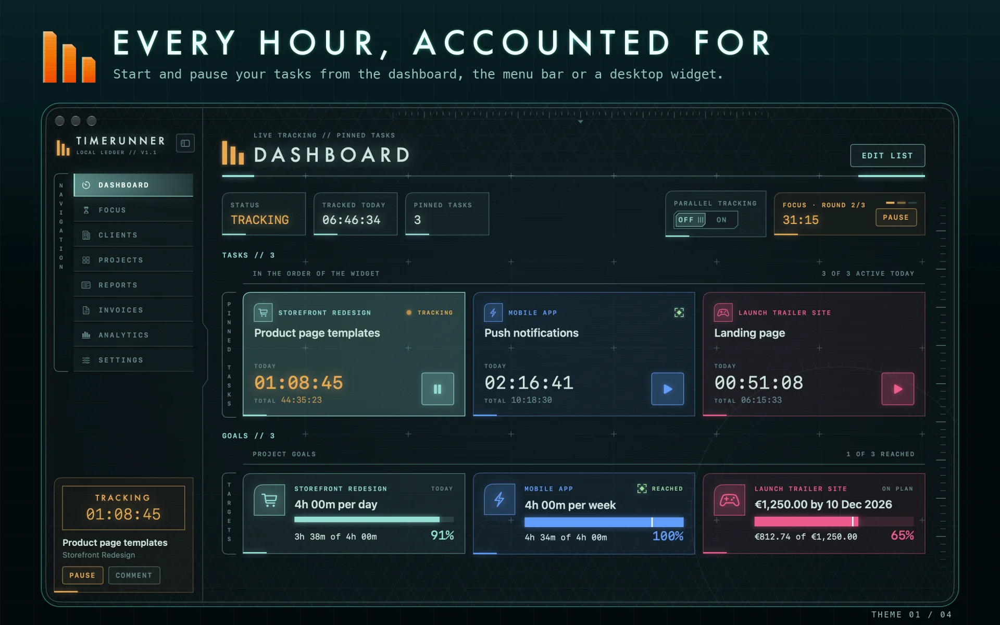
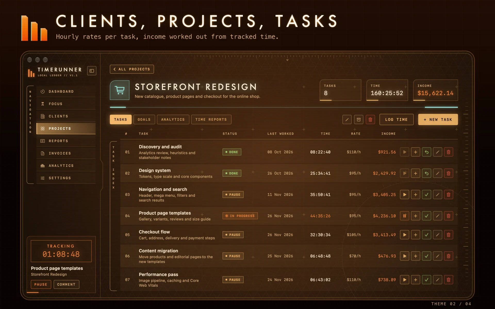
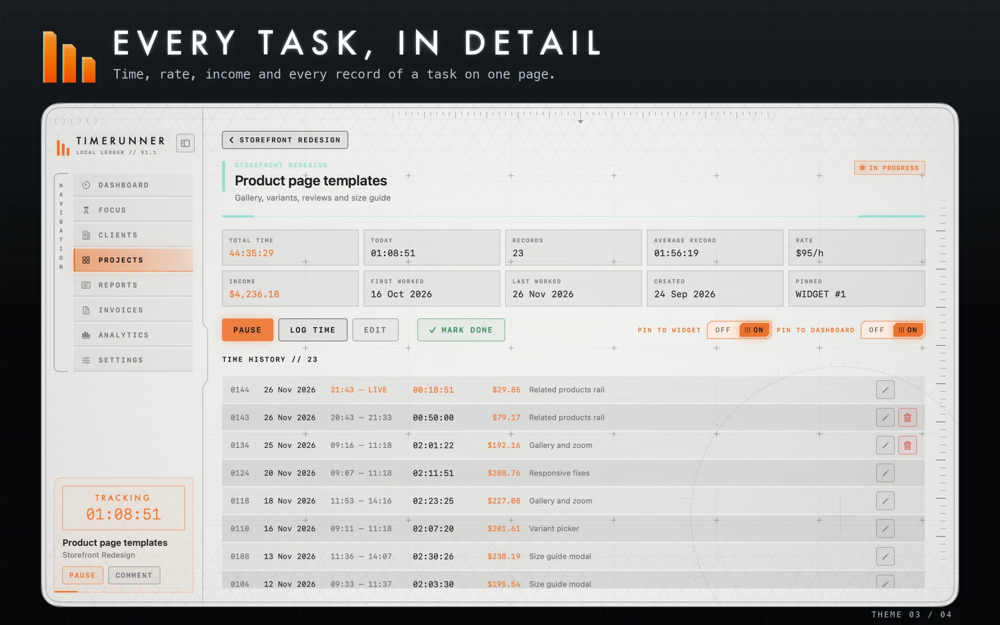
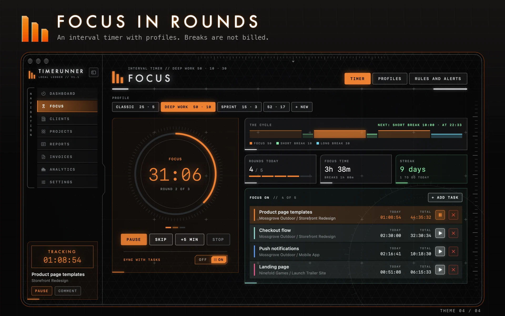
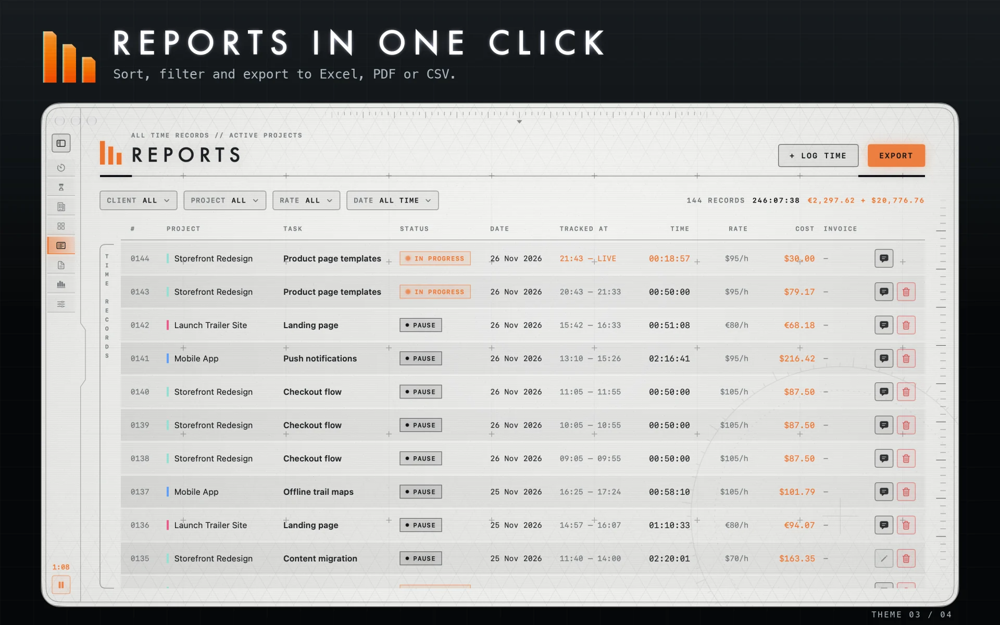
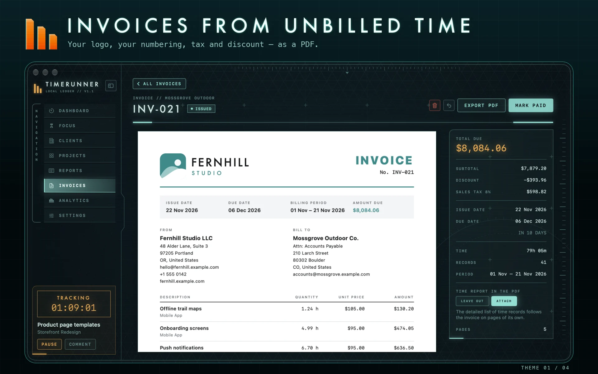
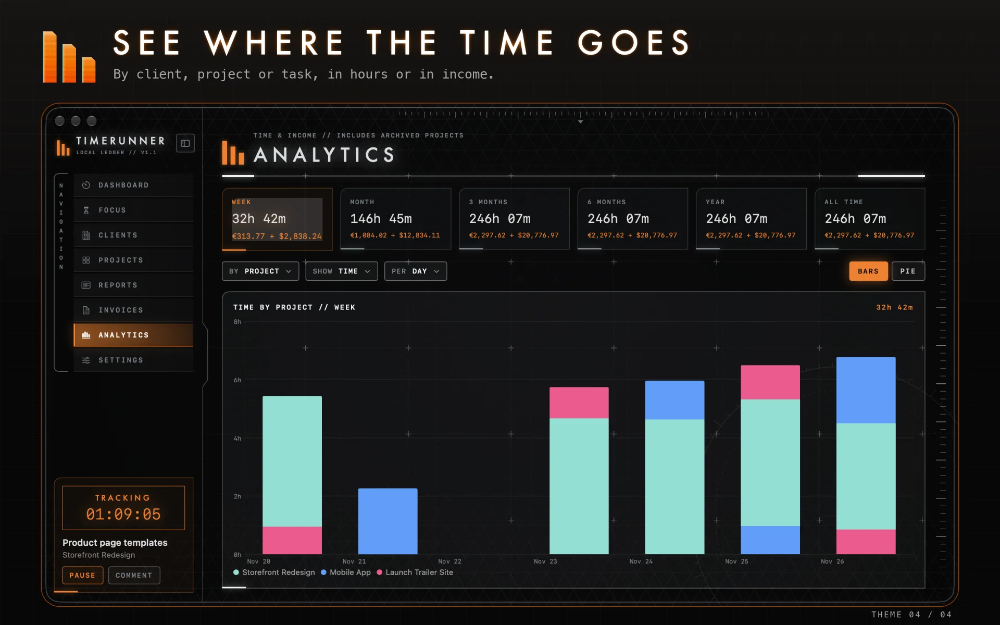
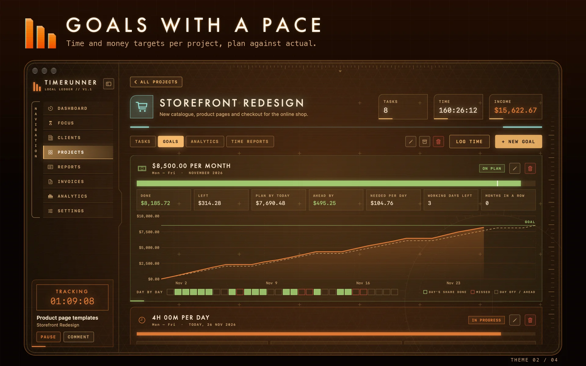
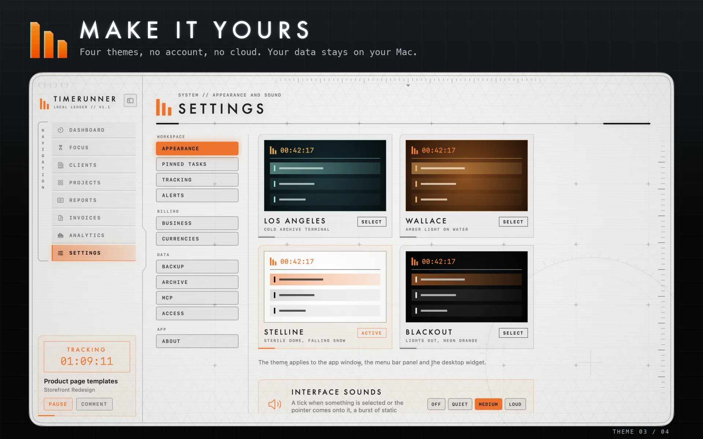
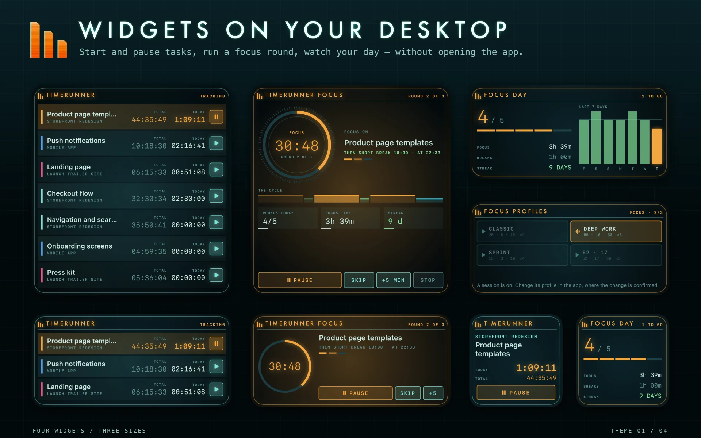

Time, tracked
the way you bill it
Time tracking that looks like the future: timers, Pomodoro focus, live income and PDF invoices in one neon console for the Mac. Private. Beautiful. Free for a month.


- Clients → projects → tasks → time records, with a rate and a currency per task
- One timer at a time, or several side by side

- Log time you forgot to track, with a day, a duration and a comment
- Statuses: To do, In progress, Pause, Done

- An interval timer in the Pomodoro style: rounds of focus, short breaks, a long one after the last
- Profiles: 25·5, 50·10, 15·3, 52·17 — and your own
- It can run a task's timer and pause it for breaks, so rest is not billed
- Sounds, notifications, a warning before the end, a break screen
- A list of tasks for Focus: sessions go only with the tasks you put on it

- A sortable table of every record, with client, project, rate and date filters
- Export to an Excel workbook (.xlsx), PDF or CSV

- PDF invoices from a client's unbilled time — all of it or a period, a line per task, project or record
- Your logo, colour, payment details, numbering, tax and discount
- Draft → Issued → Paid, with overdue worked out from the due date
- Time on an issued invoice is never billed twice

- Totals for the week, month, quarter, year or all time — by client, project or task, in hours or in income

- Time or money targets per project: per day, week or month, or by a date
- Progress, pace, a plan-against-actual chart and a mark for every day

- Four themes, from teal neon to plain black
- Sections you do not use can be hidden
- The window shrinks to a corner of the screen and stays useful
- In nine languages: English, Spanish, French, German, Italian, Polish, Belarusian, Japanese and Korean

- One click to start or pause — in the app, in the menu bar, on the desktop
- Three widgets: the timer, your day, your profiles
- Pin a task to the dashboard and to the desktop widget separately
- No account, no analytics, no advertising — nothing you enter leaves your Mac
- Automatic daily backups on your Mac and in a folder you choose
- Optional Touch ID lock
- Any national currency, and the ten largest cryptocurrencies
- A built-in MCP connector links TimeRunner to Claude, ChatGPT, Codex, Cursor, VS Code and other AI tools on your Mac
- Ask in your own words — “start the timer on Design”, “log two hours for Acme yesterday”, “close this task” — and your assistant does it in TimeRunner
- It can create clients, projects and tasks, start and stop timers, log time, close tasks and archive projects
- Ask for a report: hours and income by client, project or task, by day, week or month; invoices, payments received and what is still unpaid
- Off until you switch it on, read-only if you prefer, and nothing can ever be deleted through it
FREE FOR A MONTH, THEN YOURS TO CHOOSE
TimeRunner is free to download, and everything is free for the first month. After that:
A month
A year, or in 12 monthly payments of $1.99 where the App Store offers them
Once, nothing to renew
Without a plan TimeRunner turns read-only: your records stay on your Mac and can still be opened, exported and backed up.
A subscription is charged to your Apple Account and renews automatically for the same period and price unless it is cancelled at least 24 hours before the period ends. Manage or cancel it in your App Store account settings.
Prices in the United States. In other countries the App Store shows its own.